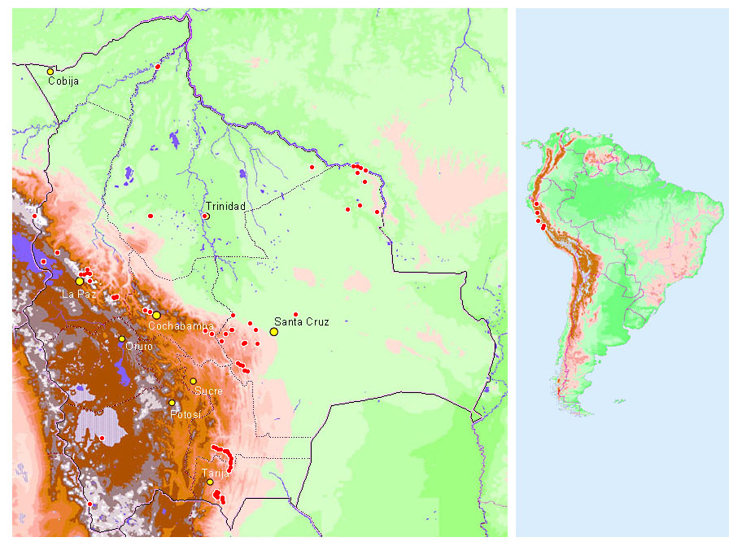

Bolivian Birding Localities
created by Sjoerd Mayer
|
|

Click on a red dot. Alternatively, you may click here for a list of localities.
|
Trip reports on the web
- Bolivia
- Let's go Pig Hunting, an adventure in the lowlands of Bolivia, 3rd - 22nd August 2005,
by Keith Martin
- Birding in Bolivia, 29 November 2002 - 1 January 2003,
by Paola Ricceri & Marco Salvioni.
- Birding in Apa Apa Forest, 17-19 March 2002,
by Patrick O'Donnell.
- Bolivia, November 2001, by Jan Vermeulen.
- Bolivia September/October 2000, by John van der Woude. Many photographs and birding
directions.
-
Birdwatching in Bolivia & Chile August 1999, by Erik Mølgaard, Jesper Meedom & Ulrik Andersen.
- Bolivia, 10-30 July 1999, by Roger & Jan Boyd.
- A Birding Trip to Riberalta,
north-east Bolivia, 13-16 October 1998, by Barry Wright.
- Rio Heath Lodge 1998, by Paul Champlin.
- Riberalta, Bolivia, 15-20 July 1997, by Jon Hornbuckle.
- Bolivia, 7 June-7 July 1997,
by Hein Prinsen and Elisabeth Addink.
- Bolivia, 5-25 March 1992, by Niels Poul Dreyer.
- Bolivia November 1991-January 1992
(PDF file), by Rolf de By and me.
- Peru
There are also some site descriptions and trip reports on this site: see
two birding sites near La Paz (La Paz),
Vallegrande - Masicuri (Santa Cruz),
Narvaez - Villa Charcas (Chuquisaca and Tarija),
and Tariquia (Tarija).There are maps on the pages about
La Cumbre, the Choquetanga valley, and Cotapata
(La Paz), about Inquisivi (La Paz) and about Riberalta
(Beni).


Back to the main map
or the locality list.
This site is maintained by Sjoerd Mayer.
If something doesn't work, please tell me!